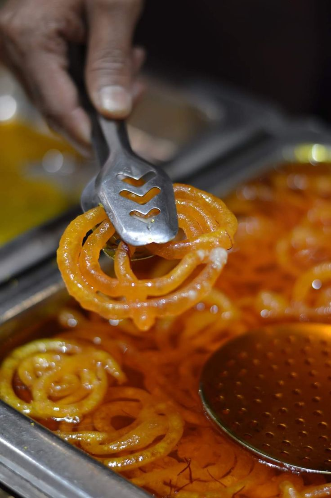
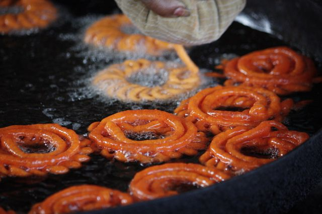
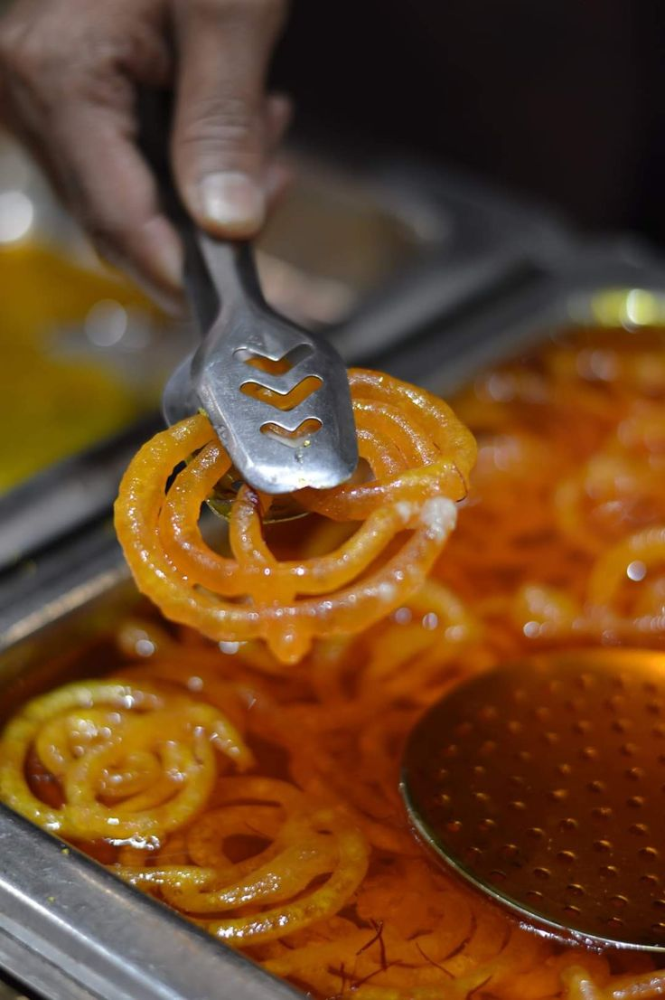
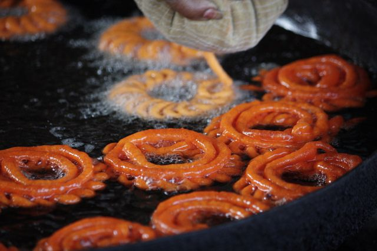

Kheer
Kheer is a beloved traditional Nepali dessert made primarily from rice, milk, and sugar. It's creamy, rich, and often enjoyed during festivals, religious ceremonies, and special occasions.
Explore Recipe 



It's made by deep-frying fermented batter (usually made from maida/all-purpose flour) into circular spiral shapes and then soaking them in warm sugar syrup. It's crispy on the outside, juicy on the inside, and loved across Nepal — especially with swaari (soft fried bread) or milk tea. Though originally Indian, Jerry has become a beloved part of Nepali street food and breakfast culture, often served hot and fresh from sweet shops.
 Prep Time
Prep Time10 mins
 Cook Time
Cook Time20 mins
 Ingredients:
Ingredients:  Instructions:
Instructions:  Pro Tips
Pro Tips
Kheer is a beloved traditional Nepali dessert made primarily from rice, milk, and sugar. It's creamy, rich, and often enjoyed during festivals, religious ceremonies, and special occasions.
Explore Recipe
Chatamari is a thin rice flour crepe that is a popular traditional dish of the Newar community in Nepal. Often called the "Newari pizza".
Explore Recipe
Piro Aloo is a simple yet flavorful Nepali side dish made by stir-frying boiled potatoes with spices, chilies, and sometimes onions and garlic.
Explore Recipe